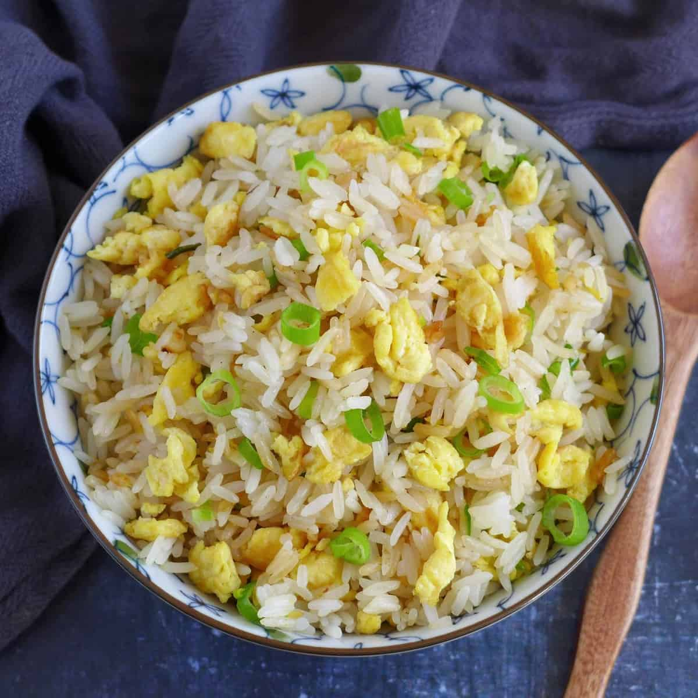

Recipe Blog by Brian
Recipe #2: Egg Fried Rice
|
 |
 |
|
Ingredients Required:
- Cooking oil
- Eggs
- Cold, day old rice
- Soy sauce
- Salt
- Green onions
Instructions:
- Crack eggs into a bowl and beat well and add a pinch of salt
- Chop your green onions into small pieces and set aside
- Get your wok nice and hot. Use a teaspoon of cooking oil and add it in the wok by swirling it around the wok.
- Pour the eggs in and start scrambling. Once they are nearly cooked, add 2 more teaspoons of cooking oil, and then add in the cold, day old rice.
- Mix the rice with the egg and then ad in the soy sauce. Be sure to pour in the soy sauce around th edge of the wok for better flavor
- Add in the green onions last and continue stirring everything
- OPTIONAL: you can add a garnish on top of the egg fried rice like sesame seeds